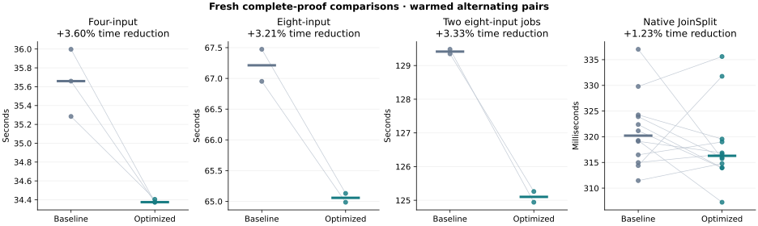
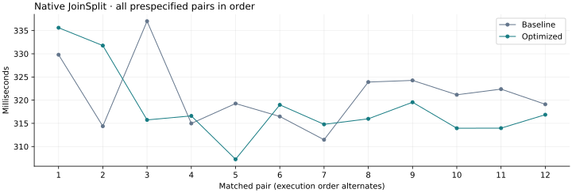

20 October 2026 · Fourth optimization pass · Tesla V100-PCIE-32GB
This run compares the previous scalar_limb release with external_brev.
Both use fresh proofs, the same fixtures and the same independent CPU verifier binaries.
Earlier campaign evidence remains intact.
The selected change lowers median latency by 3.60% for four-input aggregation, 3.21% for eight-input aggregation, and 3.33% for two concurrent eight-input jobs; all seven aggregation pairs favor the candidate. Native JoinSplit has a 1.23% lower pooled median and seven wins in twelve pairs, but paired changes range from a 5.53% regression to a 6.31% improvement. This run does not establish a stable native latency gain. All 60 benchmark outputs passed independent CPU verification.
Values are seconds. Positive reductions indicate lower latency. The pooled-median ratio and median within-pair reduction answer different questions; both are retained along with every raw sample.
| Workload | Baseline median | Optimized median | Pooled reduction | Median paired reduction | Paired wins |
|---|---|---|---|---|---|
| Four-input aggregation | 35.659293 | 34.374682 | +3.60% | +3.60% | 3/3 |
| Eight-input aggregation | 67.212648 | 65.057490 | +3.21% | +3.21% | 2/2 |
| Two concurrent eight-input jobs | 129.415464 | 125.101093 | +3.33% | +3.33% | 2/2 |
| Native JoinSplit | 0.320216 | 0.316293 | +1.23% | +1.08% | 7/12 |

The native sequence is shown separately to make shifts and variability visible.

The Poseidon2 external matrix now accumulates each input's low and high 32-bit limbs with ordinary integer additions. Each output's coefficients sum to 21, so each limb sum is at most 21 × (2³² − 1), below 2³⁷. Reconstructing the exact sum produces a high 64-bit word of at most 20. One Goldilocks fold and one carry correction therefore suffice. This replaces modular reduction after each intermediate addition with one reduction per output.
Bit reversal now uses five fixed stages of unsigned masks and shifts, followed by truncation to the public row-index width. The zero-bit case avoids a shift by 32. The implementation uses portable OpenCL operations.
src/gpu.rssrc/gpu/arithmetic_tests.rsProof parameters, round constants, randomness, proof encoding, verifier behavior, NTT scheduling, resource admission and the 250 W power cap remain the same. The Metal implementation is separate.
These are summed kernel-event durations, which can overlap and must not be added to obtain end-to-end latency. The row-hash kernel reports zero private bytes for both builds. No profile events were dropped.
| Workload | Kernel | Baseline seconds | Optimized seconds | Reduction |
|---|---|---|---|---|
| Four-input aggregation | lde_absorb | 7.392743 | 6.693890 | +9.45% |
| Four-input aggregation | lde_ntt | 6.283122 | 6.059164 | +3.56% |
| Four-input aggregation | device_extension_quotient | 3.014403 | 3.014350 | +0.00% |
| Native JoinSplit | lde_absorb | 0.020804 | 0.019118 | +8.10% |
| Native JoinSplit | lde_ntt | 0.013000 | 0.012266 | +5.65% |
| Native JoinSplit | device_extension_quotient | 0.001588 | 0.001586 | +0.12% |
Values are GiB, taking the highest sampled peak across the qualification runs. The original host, device-allocation and whole-device admission budgets remain in force.
| Workload | Baseline GPU | Optimized GPU | Baseline host RSS | Optimized host RSS |
|---|---|---|---|---|
| Eight-input aggregation | 8.512 | 8.512 | 1.236 | 1.236 |
| Two concurrent eight-input jobs | 17.082 | 17.293 | 2.446 | 2.479 |
40 targeted tests passed, plus CPU-only and GPU-without-tuning compilation. New integer oracles cover the full-u64 external matrix, the bounded limb reducer and every bit count from 0 through 32. The screening harness independently checks complete permutations and NTTs, including direct DFT sums for small shapes.
The benchmark ledger contains 60 independently CPU-audited outputs representing 192 fresh benchmark proofs. Output hashes are unique, every required GPU stage is covered, and native public-input tampering is rejected. All 690 selected source-file hashes match release and test builds.
| Targeted check | Passed |
|---|---|
| scalar-absorb-oracle | 1 |
| parameter-guard | 1 |
| tuning-policy | 3 |
| witness-host | 6 |
| witness-budget | 1 |
| ntt-local-memory | 5 |
| ntt-and-tuning-gpu-oracles | 4 |
| arithmetic-oracles | 6 |
| dft-and-commitment-oracles | 6 |
| witness-parity-reference | 2 |
| witness-parity-fusion | 2 |
| witness-rejection | 2 |
| native-wallet-entrypoints | 1 |
Machine-readable evidence and all measurements · Incremental source patch · Source, controllers and raw evidence archive